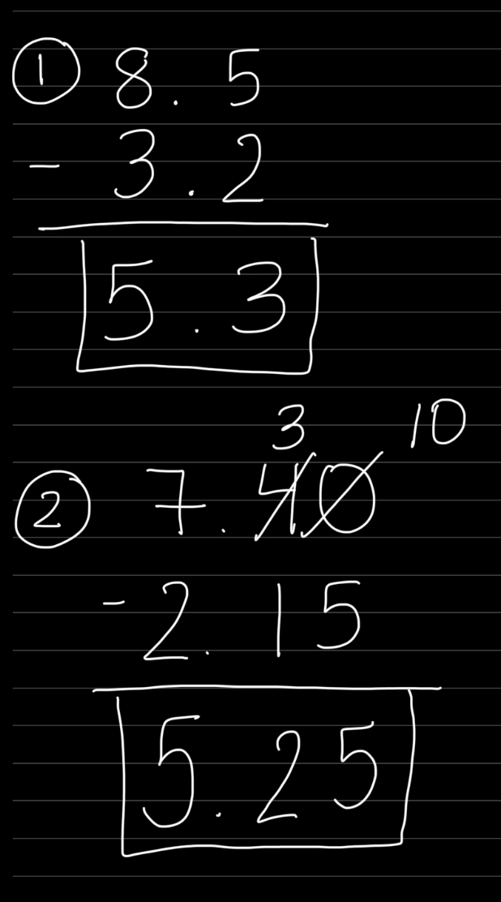
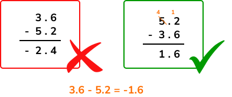
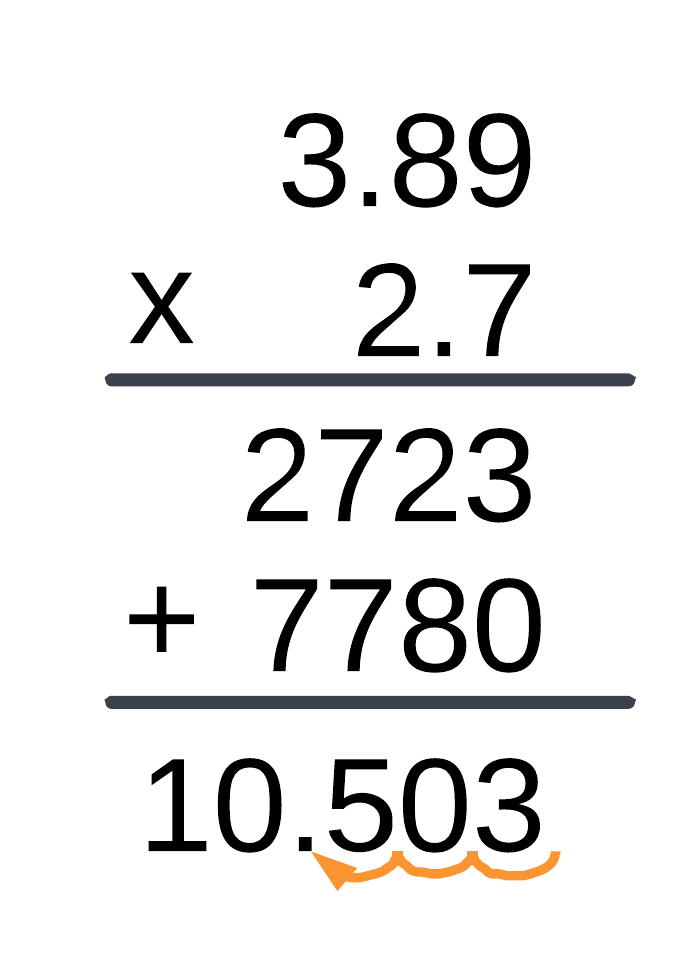
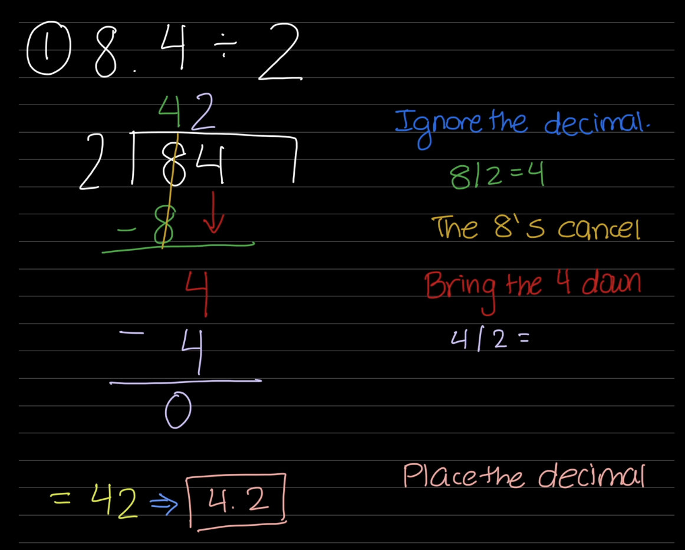

A decimal is a number that uses a dot, called a decimal point (.) to show parts of a whole, like tenths or hundredths.
Decimal Place Value
A place value chart is a chart that helps us understand the value of each digit in a number by showing its position.
The farther left a digit is, the greater its place value.
The farther right a digit moves after the decimal point, the smaller its place value becomes.
Examples
Let's look at some examples. Using the chart above, we will find out the place value of the number underlined.
1.2347
32.86
8.7283
4432
Explanations
The underlined number is 3. It is 2 places after the decimal. The place after the decimal is called the tenths place. The place after the tenths place is called the hundredths place where the 3 is located. So the 3 is in the hundredths place.
The underlined number is 8. It is right after the decimal point. It is in the tenths place.
The underlined number is 8. It is before the decimal point. That place is called the ones place. For this question the 8 is in the ones place.
The underlined number here is 4. Counting from the last number we know that: 2 is the ones place, 3 is the tens place, the 4 before the 3 is the hundreds place. The 4 that is underlined is before that. It is called the ten thousands place.
Practice Problems
Using the chart above, determine which place value the underlined digit is in.
2.3458
28264
38.91810
4.598
Comparing Decimals
Comparing decimals means deciding which decimal is greater, smaller, or if they are equal.
Symbol
Meaning
>
Greater than
<
Less than
=
Equal to
How to Compare Decimals
Compare the whole number part.
If the whole numbers are the same, compare the tenths.
If they are still the same, compare the hundredths.
Continue comparing each place value until the numbers are different.
Examples
Let's look at some examples to better understand how to compare decimals.
Greater Than (>)
3.8 > 3.5 because 8 tenths is greater than 5 tenths.
6.42 > 6.18 because 42 hundredths is greater than 18 hundredths.
9.03 > 8.99 because 9 is greater than 8.
Less Than (<)
0.42 < 0.57 because 42 hundredths is less than 57 hundredths.
4.16 < 4.61 because 1 tenth is less than 6 tenths.
2.09 < 2.10 because 9 hundredths is less than 10 hundredths.
Equal To (=)
1.50 = 1.5 because trailing zeros do not change the value of a decimal.
2.400 = 2.4 because trailing zeros do not change the value.
7.80 = 7.800 because both decimals have the same value.
Practice Problems
See if you can compare the following decimals. Check your answers when you are done.
Write >, <, or = to compare each pair of decimals.
0.6 ____ 0.8
3.45 ____ 3.54
5.2 ____ 5.20
7.18 ____ 7.08
1.09 ____ 1.90
4.56 ____ 4.560
2.34 ____ 2.43
8.75 ____ 8.57
6.03 ____ 6.3
9.99 ____ 9.999
Rounding Decimals
Rounding decimals means changing a decimal to a nearby value that is easier to work with while keeping it close to its original value.
Steps to Round Decimals
Find the place value you are rounding to.
Look at the digit to the right.
If the digit is 5 or greater, round up.
If the digit is 4 or less, keep the digit the same.
Remove any digits to the right of the rounded place.
Examples 1: Round 6.4 to the nearest whole number.
Step 1: Find the whole number place.
Step 2: Look at the digit to the right (the tenths place).
The tenths digit is 4.
Since 4 is less than 5, keep the whole number the same.
Answer: 6
Example 2: Round 8.7 to the nearest whole number.
Step 1: Find the whole number place.
Step 2: Look at the digit to the right (the tenths place).
The tenths digit is 7.
Since 7 is 5 or greater, round up.
Answer: 9
Example 3: Round 3.46 to the nearest tenth.
Step 1: Find the tenths place.
Step 2: Look at the digit to the right (the hundredths place).
The hundredths digit is 6.
Since 6 is 5 or greater, round the tenths digit up.
Answer: 3.5
Example 4:
Round 9.241 to the nearest hundredth.
Step 1: Find the hundredths place.
Step 2: Look at the digit to the right (the thousandths place).
The thousandths digit is 1.
Since 1 is less than 5, keep the hundredths digit the same.
Answer: 9.24
Practice Problems
Round each decimal to the place value given.
Round 4.7 to the nearest whole number.
Round 8.3 to the nearest whole number.
Round 6.5 to the nearest whole number.
Round 9.2 to the nearest whole number.
Round 3.46 to the nearest tenth.
Round 7.84 to the nearest tenth.
Round 5.29 to the nearest tenth.
Round 8.76 to the nearest tenth.
Round 4.583 to the nearest hundredth.
Round 9.127 to the nearest hundredth.
Adding Decimals
Adding decimals means combining two or more decimal numbers to find their total.
Steps to Add Decimals
Line up the numbers so that the decimal points are directly under each other.
Add zeros to the end of a decimal if needed.
Add the numbers like you normally would.
Bring the decimal point straight down into the answer.
Example 1: 3.4 + 2.5
Step 1: Line up the decimal points. Anywhere you do not see a value, replace it with a 0.
Subtracting decimals means finding the difference between two decimal numbers.
Steps to Subtract Decimals
Line up the numbers so that the decimal points are directly under each other.
Add zeros to the end of a decimal if needed.
Subtract the numbers like you normally would.
Bring the decimal point straight down into the answer.
Example 1: 8.5 - 3.2
Step 1: Line up the decimal points.
8.5
-3.2
Step 2: Subtract the numbers.
5 − 2 = 3
8 − 3 = 5
Answer: 5.3
Example 2: 7.40 - 2.15
Step 1: Line up the decimal points.
7.40
-2.15
Step 2: Subtract.
Borrow when needed.
Answer: 5.25
Example Visual:
For the 2 problems above, here is a visual representation:

Picture Example:

Practice Problems
Subtract the following decimals.
8.6 - 2.4 = ____
9.5 - 4.3 = ____
7.85 - 3.20 = ____
10.4 - 6.75 = ____
15.60 - 8.25 = ____
Multiplying Decimals
Multiplying decimals means finding the product of two decimal numbers.
Steps to Multiply Decimals
Ignore the decimal points and multiply the numbers as if they were whole numbers.
Count the total number of decimal places in both factors.
Place the decimal point in the product so it has the same total number of decimal places.
Example 1: 2.5 × 4
Step 1: Ignore the decimal point.
25 × 4 = 100
Step 2: Count the decimal places.
2.5 has 1 decimal place.
Step 3: Move the decimal point one place from the right.
Answer: 10
Example 2: 1.2 × 3.4
Step 1: Ignore the decimal points.
12 × 34 = 408
Step 2: Count the decimal places.
1.2 has 1 decimal place.
3.4 has 1 decimal place.
There are 2 decimal places in total.
Step 3: Move the decimal point two places from the right.
Answer: 4.08
Picture Example:

Practice Problems
Multiply the following decimals.
2.3 × 4 = ____
1.5 × 6 = ____
2.4 × 3.5 = ____
4.2 × 1.3 = ____
5.25 × 2 = ____
Dividing Decimals
Dividing decimals means finding how many times one decimal number fits into another.
Steps to Divide Decimals
If the divisor is a decimal, move the decimal point to the right until it becomes a whole number.
Move the decimal point in the dividend the same number of places.
Divide as you normally would.
Place the decimal point in the quotient directly above the decimal point in the dividend.
Example 1: 8.4 ÷ 2
Step 1: The divisor is already a whole number.
Step 2: Divide as usual.
84 ÷ 2 = 42
Step 3: Place the decimal point in the answer.
Answer: 4.2
Visual Example:

Example 2: 6.4 ÷ 0.8
Step 1: Move the decimal point in the divisor one place to the right.
0.8 becomes 8.
Step 2: Move the decimal point in the dividend one place to the right.
6.4 becomes 64
Step 3: Divide.
64 ÷ 8 = 8
Answer: 8
Picture Example:
Look at the picture below. First, ignore the decimal points and divide how you would normally. Then count how many total decimal places are in both numbers. Starting from the end of your answer, move the decimal point that many places to the left.